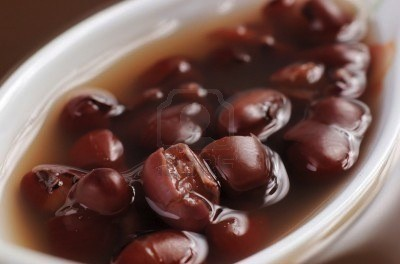

Cook Time:
1 hour
30 mins
Total time:
1 hour
45 mins
Ingredients:
1 tablespoon olive oil
1 1/2 cups chopped yellow onions
1/4 cup chopped green bell peppers
1 tablespoon minced garlic
4 bay leaves
2 cups dried red kidney beans, soaked overnight
1 tablespoon Special Seasoning
2 quarts vegetable stock
1 teaspoon salt
3 tablespoons chopped parsley
1 cup diced carrots
1 1/2 cups cooked long-grain brown rice, warm
6 tablespoons chopped green onions
Directions:
- Heat the oil in a large heavy pot over high heat. Add the onions, bell peppers, garlic, and bay leaves, and cook, stirring, for 2 minutes.
- Add the beans and cook for 2 minutes.
- Add the Special Seasoning and stock, stir well, and bring to a boil. Reduce the heat to medium and cook for 1 1/2 hours, until beans are tender, stirring occasionally.
- Add the salt and parsley, cover the pot, and cook for 15 minutes. Discard the bay leaves. Remove 1 cup of beans from the pot and reserve.
- With a hand-held immersion blender, or in batches in a food processor, puree the red beans. Add the reserved beans, and stir well.
- To serve, ladle a generous cup of the soup into each of 6 bowls.
- Top each serving with 1/4 cup of the rice and 1 tablespoon of green onions.